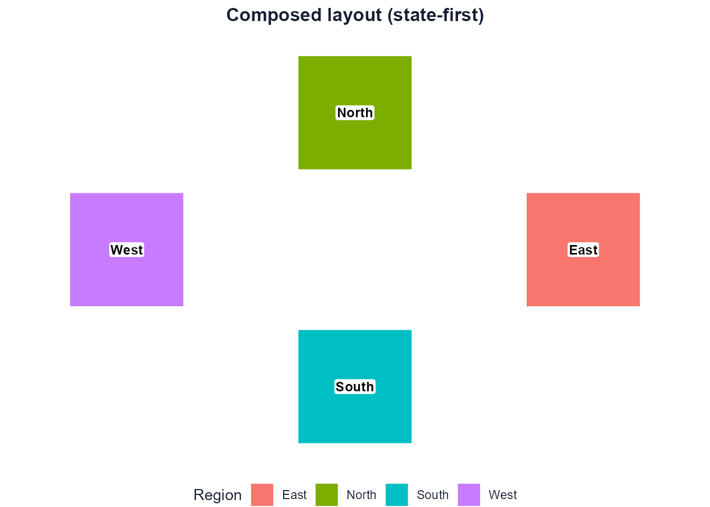

The recommended way to use dragmapr is to treat a layout as an
editable composition object – a
dragmapr_state – and carry it through three steps:
compute -> compose -> render
(layout) (edit) (static / interactive)The state is plain, reproducible data: region and label offsets (as
metre deltas), the projected crs, a
geometry_id, the selected_feature, and a
monotonically increasing version. Because the geometry and
the editorial state are kept separate, you can recompute the layout
while preserving manual edits, and the same state object drives
the interactive editor, the static renderer, and any persistence.
The older route – exporting offset CSVs and calling
as_dragmapr() – still works, but it is now the low-level
escape hatch rather than the main road.
1. Compute
In a full pipeline the layout comes from explodemap, which computes a mathematically valid exploded layout and hands it over as a state:
library(explodemap)
layout <- explode_grouped(my_sf, region_col = "region")
state <- as_dragmapr_state(layout) # dx_m/dy_m deltas + crs + geometry_idFor a self-contained example we build the equivalent state directly, so this vignette runs with only dragmapr installed:
library(dragmapr)
make_square <- function(x0, y0, size = 100000) {
sf::st_polygon(list(rbind(
c(x0, y0), c(x0 + size, y0), c(x0 + size, y0 + size),
c(x0, y0 + size), c(x0, y0)
)))
}
regions <- sf::st_sf(
region = c("North", "South", "East", "West"),
geometry = sf::st_sfc(
make_square(0, 140000), make_square(0, 0),
make_square(140000, 70000), make_square(-140000, 70000),
crs = 3857
)
)
state <- dragmapr_state(
region_offsets = data.frame(
region = c("North", "South", "East", "West"),
dx_m = c(0, 0, 60000, -60000),
dy_m = c(50000, -50000, 0, 0)
),
crs = 3857,
geometry_id = "synthetic-quad-v1"
)
state
#> $level
#> [1] "region"
#>
#> $region_offsets
#> region dx_m dy_m
#> 1 North 0 50000
#> 2 South 0 -50000
#> 3 East 60000 0
#> 4 West -60000 0
#>
#> $label_offsets
#> [1] label_id region dx_m dy_m
#> <0 rows> (or 0-length row.names)
#>
#> $expanded_groups
#> character(0)
#>
#> $view
#> NULL
#>
#> $version
#> [1] 0
#>
#> $crs
#> [1] 3857
#>
#> $geometry_id
#> [1] "synthetic-quad-v1"
#>
#> $selected_feature
#> NULL
#>
#> attr(,"class")
#> [1] "dragmapr_state"2. Compose
dragmapr_edit() is the friendly front door to the
interactive editor. It accepts a projected sf, an
explodemap grouped_exploded_map, or a
dragmapr_layout, seeded with the state:
dragmapr_edit(regions, region_col = "region", state = state)Inside Shiny, the widget reports every edit through an input named
paste0(outputId, "_state"). Rebuild a
dragmapr_state from it with
dragmapr_widget_state() so the server always holds the live
composition:
output$map <- renderDragmapr(dragmapr_edit(regions, "region", state = state))
observeEvent(input$map_state, {
state <- dragmapr_widget_state(input$map_state)
})
# Push a selection from R back into the browser:
updateDragmapr(session, "map", selected_feature = "East")3. Render
Because the state is just data, you can persist it and reproduce the
layout as a static ggplot2 image at any time – no browser
session and no recomputation:
path <- tempfile(fileext = ".json")
write_dragmapr_state(state, path)
state2 <- read_dragmapr_state(path)
render_dragged_map(
regions,
region_col = "region",
state = state2,
title = "Composed layout (state-first)"
)
The state object
A dragmapr_state carries:
-
region_offsets/label_offsets– metre deltas (dx_m,dy_m) keyed by a stable join key; -
crs– the projected CRS the deltas are expressed in (EPSG or WKT), so a saved state is safe to reapply later; -
geometry_id– a provenance tag for the geometry the state was composed against; -
selected_feature,expanded_groups,view– editor/dashboard state; -
version– a revision that bumps monotonically as edits accumulate.
The full lifecycle (validate_, merge_,
snapshot_/restore_,
inherit_drag_offsets(),
collapse_drag_offsets(), and JSON
read_/write_) operates on this object. For a
complete runnable round-trip, see the Shiny app in
system.file("examples/full_state_roundtrip.R", package = "dragmapr").
For a fuller cross-package example that starts in
explodemap, uses layout-quality diagnostics and label-aware
parameter search, then composes and renders with dragmapr,
run:
source(system.file(
"examples/explodemap_dragmapr_pipeline.R",
package = "dragmapr"
))